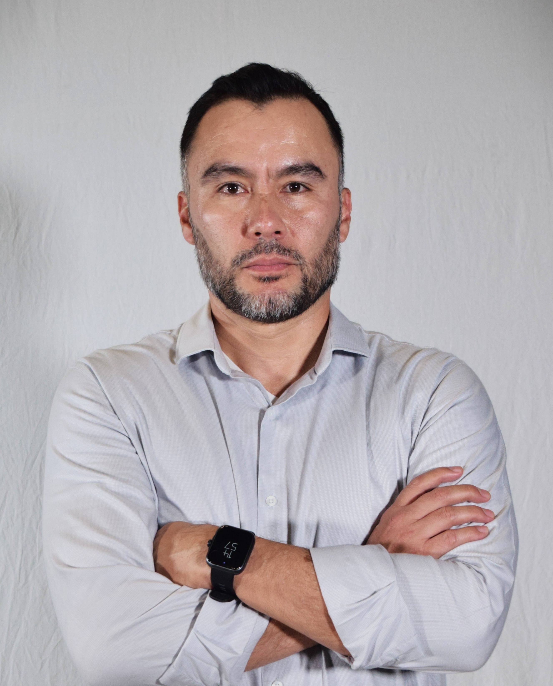
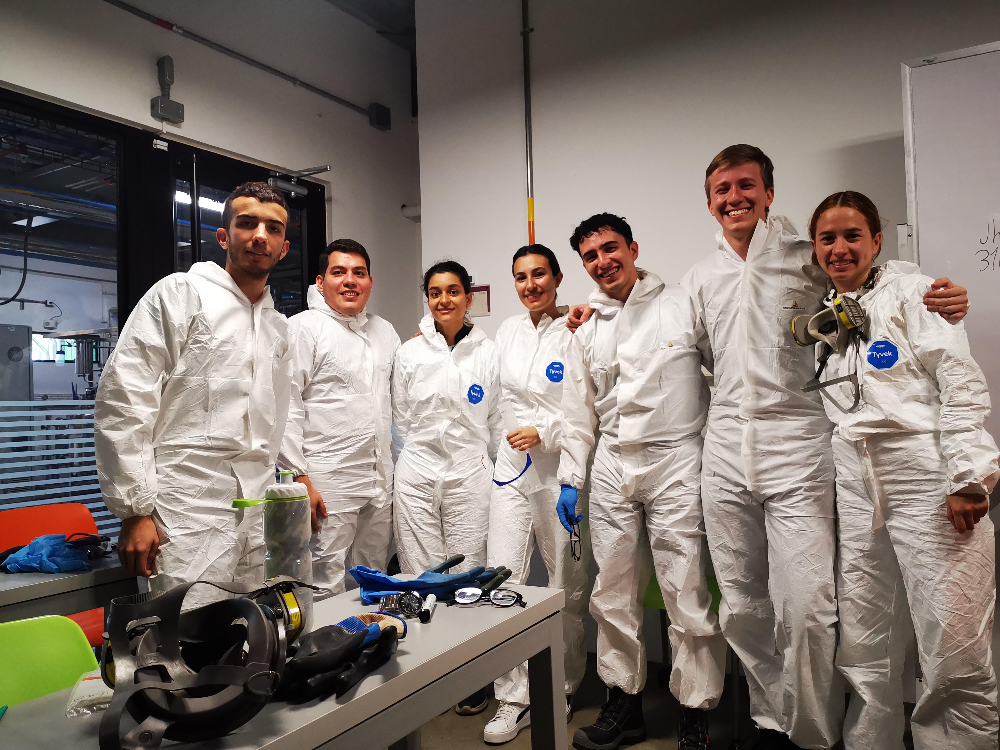
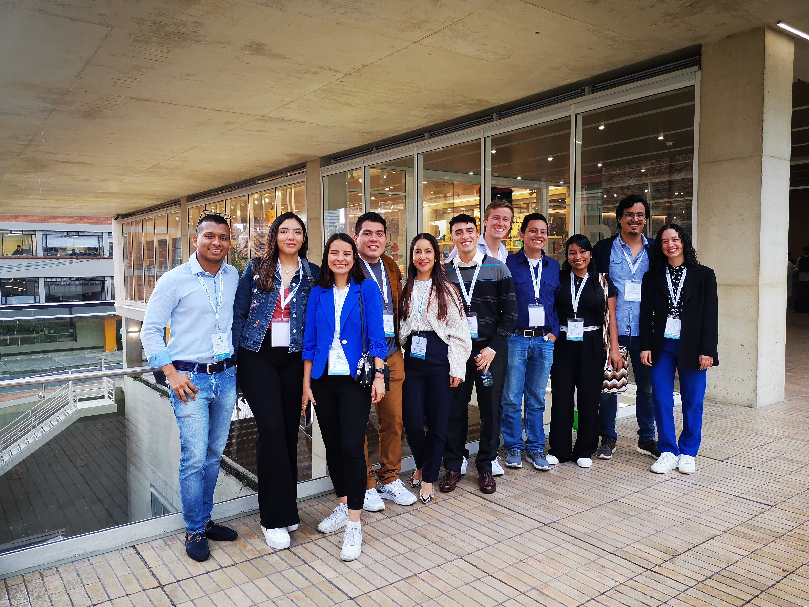
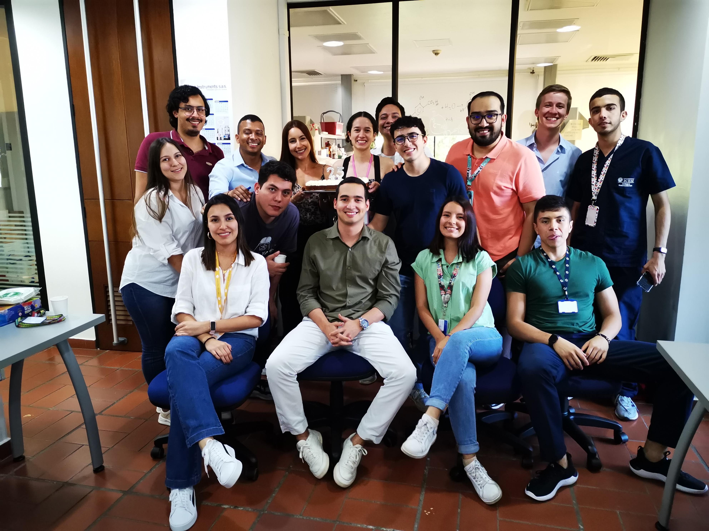
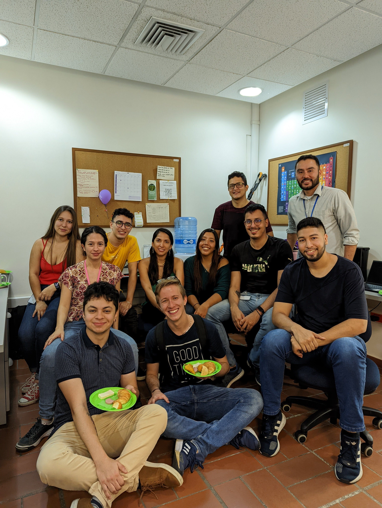
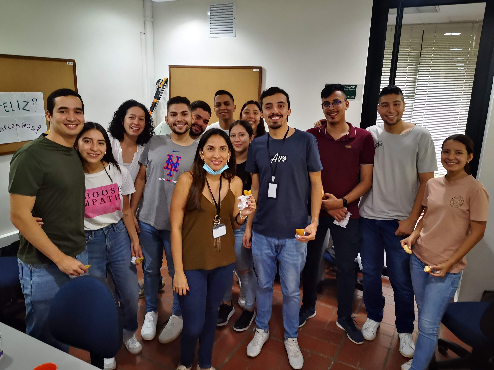

The Biotechnology and Natural Products Research Group develops experimental research at the interface of phytochemistry, analytical chemistry, plant biotechnology, and biomass valorization.
Our work connects specialized metabolite discovery with pilot-scale validation strategies supporting sustainable plant-based innovation and technology transfer.
Team

Guillermo Montoya, PhD
Group Leader – Biomass Valorization, Phytochemistry, Metabolomics and Plant Biotechnology
Esteban Castaño Llanos
PhD Student (2026–2030)
Maira Alejandra Vega Muñoz
MSc in Biotechnology Alumni
Juan Esteban Vivas
MSc in Biotechnology Alumni
Catherine Muñoz
MSc candidate in Biotechnology
Technology Transfer: Spin-off Fitogénico S.A.S.
Fitogénico S.A.S. represents a translational pathway connecting phytochemical research with applied development of plant-derived products and biomass-based innovation platforms.
The Biochemical Engineering Pilot Plant at Universidad Icesi supports biomass scale-up experimentation and translational validation environments bridging laboratory discovery and pilot-scale implementation.
The 40 L bubble column pilot unit exemplifies the infrastructure available for bioprocess testing and technology transfer workflows.
Beyond publications and technology transfer, the group also values scientific training, academic networking, shared lab culture, and community-building experiences across research, conferences, and graduate education.

2024 Pilot plant prototyping experiment Bioeconomy Grant.

2023 Our research group at the National Chemistry Congress.

2023 Extracting the best of nature and enhancing it with the best of science.

2022 Graduate student and research team community life.

2021 Fueling science with coffee, cake, and teamwork.
Selected Publications
2025
Castaño-Llanos, Esteban; Vega-Muñoz, Maira Alejandra; Grisales-Vasquez, Yohana; Loaiza-Loaiza, Oscar Alfonso; Henao-Rojas, Juan Camilo; Montoya, Guillermo. Capsicum Germplasm Targeted Valorization Using Physicochemical and Phytochemical Descriptors. Frontiers in Sustainable Food Systems, 2025.
Díaz-Sánchez, Luis M; Chacón-Patiño, Martha L; Blanco-Tirado, Cristian; Combariza, Marianny Y; Montoya, Guillermo. Comparative metabolic profiling of wild and in vitro cultivated Cecropia angustifolia roots fraction reveals conservation of pentacyclic triterpene acid biosynthesis. Phytochemical Analysis, 2025.
Vega-Muñoz, Maira A; López-Hernández, Felipe; Cortés, Andrés J; Roda, Federico; Castaño, Esteban; Montoya, Guillermo; Henao-Rojas, Juan Camilo. Pangenomic and Phenotypic Characterization of Colombian Capsicum Germplasm Reveals the Genetic Basis of Fruit Quality Traits. International Journal of Molecular Sciences, 2025.
Lopez-Cortes, Johanna Valentina; Acin-Martinez, Sergio; Montoya, Guillermo; Balcazar, Norman. Cecropia angustifolia pentacyclic triterpene acids and Sacha Inchi oil improve carbohydrate metabolism and inflammation in prediabetic mice. Advances in Pharmacological and Pharmaceutical Sciences, 2025.
Parra-Londono, Sebastian; López-Hernández, Felipe; Montoya, Guillermo; Henao-Rojas, Juan Camilo; Ossa-Ossa, Gustavo A; Cortés, Andrés J. Merging Phenotypic Stability Analysis and Genomic Prediction for Multi-Environment Breeding in Capsicum spp. Agronomy, 2025.
Vivas-Moncayo, Juan E; Muñoz-Bonilla, Paula C; Rodriguez-Santa, Laura M; Rodriguez-Ararat, Adrián C; Montoya, Guillermo. Integrative metabolomic and transcriptomic analysis reveals CYP450-driven biosynthesis of pentacyclic triterpene acids in Cecropia angustifolia. Plant Cell, Tissue and Organ Culture (PCTOC), 2025.
Diego J. Enríquez, Julio C. Alonso, Lucas Hille, Stefan Brand, Ulrike Holzgrabe, Daniela Vergara, Guillermo Montoya, Yesid A. Ramírez. Unveiling Colombia's medicinal Cannabis sativa treasure trove: Phenotypic and Chemotypic diversity in legal cultivation. Phytochemical Analysis, 2024.
2023
Vasquez-Delgado, Juan; Vivas-Moncayo, Juan; Lopez-Cortes, Johanna; Combariza, Marianny; Montoya, Guillermo. Pharmacokinetic assessment and phytochemical triterpene control from Cecropia angustifolia using plant biotechnology. Phytochemical Analysis, 2023.
Penagos-Calvete, Diana; Guauque-Medina, Jonathan; Villegas-Torres, María Francisca; Montoya, Guillermo. Analysis of triacylglycerides, carotenoids and capsaicinoids as disposable molecules from Capsicum agroindustry. Horticulture, Environment, and Biotechnology, 2019.
Penagos-Calvete, Diana; Duque, Valeria; Marimon, Claudia; Parra, Diana M; Restrepo-Arango, Sandra K; Scherf-Clavel, Oliver; Holzgrabe, Ulrike; Montoya, Guillermo; Salamanca, Constain H. Glycerolipid composition and advanced physicochemical considerations of sacha inchi oil toward cosmetic products formulation. Cosmetics, 2019.
2018
Mosquera, Catalina; Panay, Aram Joel; Montoya, Guillermo. Pentacyclic Triterpenes from Cecropia telenitida Can Function as Inhibitors of 11β-Hydroxysteroid Dehydrogenase Type 1. Molecules, 2018.
Montoya, Guillermo; Gutiérrez, Gustavo; Ellena, Javier; Panay, Aram J. Spergulagenic Acid A: Isolation and single crystal structure elucidation. Journal of Molecular Structure, 2018.
Earlier Publications
Montoya, Guillermo; Londono, July; Cortes, Paola; Izquierdo, Olga. Quantitation of trans-aconitic acid in different stages of the sugar-manufacturing process. Journal of Agricultural and Food Chemistry, 2014.
Peláez, Guillermo L Montoya; Sierra, Jelver A; Alzate, Fernando; Holzgrabe, Ulrike; Ramirez-Pineda, José R. Pentacyclic triterpenes from Cecropia telenitida with immunomodulatory activity on dendritic cells. Revista Brasileira de Farmacognosia, 2013.
Colorado-Ríos, Jhonny; Muñoz, Diana; Montoya, Guillermo; Márquez, Diana; Márquez, Maria-Elena; López, Juan; Martínez, Alejandro. HPLC-ESI-IT-MS/MS analysis and biological activity of triterpene glycosides from the Colombian marine sponge Ectyoplasia ferox. Marine Drugs, 2013.
Yassin, Lina M; Londoño, Julián; Montoya, Guillermo; De Sanctis, Juan B; Rojas, Mauricio; Ramírez, Luis A; García, Luis F; Vásquez, Gloria. Atherosclerosis development in SLE patients is not determined by monocytes ability to bind/endocytose Ox-LDL. Autoimmunity, 2011.
Montoya, Guillermo; Jimenez, Nora. False sugar sequence phenomenon and structural analysis of α-hederin and hederacoside C through electrospray ionization and multi-stage tandem mass spectrometry. Vitae, 2011.
Montoya, Guillermo; Arango, Gabriel J; Ramírez‐Pineda, José R. Rapid differentiation of isobaric and positional isomers of structurally related glycosides from Phytolacca bogotensis. Rapid Communications in Mass Spectrometry, 2009.
Montoya, Guillermo; Arango, Gabriel J; Unger, Matthias; Holzgrabe, Ulrike. O-glycoside sequence of pentacyclic triterpene saponins from Phytolacca bogotensis using HPLC-ESI/multi-stage tandem mass spectrometry. Phytochemical Analysis, 2009.